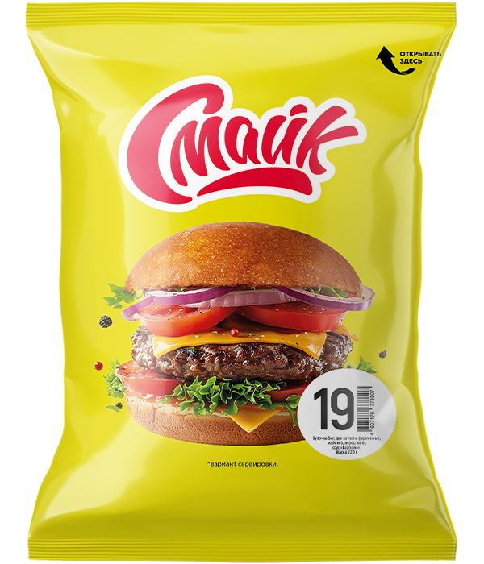

Бутерброд №19

Состав: булочка, 2 котлеты фирменные, майонез, перец «Чили», соус «Барбекю».
Масса: 220 г.
Пищевая и энергетическая ценность в 100 г продукта (средние значения):
Белки – 12 г.
Жиры – 13 г.
Углеводы – 26 г.
Калорийность – 270 ккал / 1130 кДж.